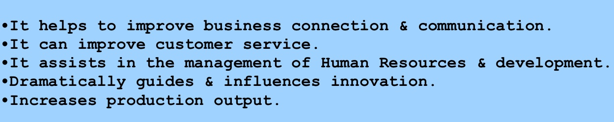
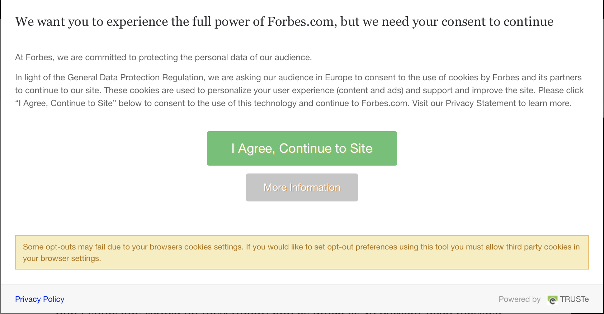

Welcome to all of you fellow coders and/or those who have arrived at my Code Nation website project. I’m Mark… hey there! So, how are you finding the, ‘Develop: Coding’ course so far?
Upon almost reaching the end of my own 3-week cohort experience, I can genuinely say I have been engrossed and inspired by all it has provided me. Firstly, let me just say, what an amazing opportunity this place offers people from all walks of life they’ve previously led!
In my personal life, I have definitely had to rise to new and exciting challenges in my past; anything from being an officer for Her Majesty’s prison service, to studying for a BA Hons degree in my early 30’s as a mature student, even after having been out of any kind of academic surrounding for almost 15+ years prior to that point. Despite now being 40 (ish) years ‘young’ on this awesome planet, I actually feel within my prime and in more ways than one, I’m metaphorically turning the corner a full 90 degrees as I write these words.
I’m lucky enough to have found Code Nation when I least expected it (that’s often the best way for it to happen so they say) and it is my hope to completely retrain in coding and cyber security to allow me to endeavour towards an entirely new and exciting career… even at my age!
I’m a fiercely proud father to one awesome 10 year old Son called Connor and he’s my little hero. As most decent parents will suggest, it’s always paramount to become your child’s positive role-model wherever possible and I hope to make him equally proud of me too. This was just my first step on the coding ladder (having never really properly coded before, although I did have a small amount of knowledge on the subject before commencing).
Here’s to the future! Good luck to you all and get the very best from your time, it’ll undoubtedly pay dividends in the long run.
It is extremely hard to imagine how we would have reached the current levels of technological superiority we appear to have accomplished within the past 50 to 100 years, if it wasn’t for the inventors of things that help to make life run more effectively and efficiently. To name but a few, we owe a huge debt of gratitude and appreciation to inventors of the steam engine, electricity, telecommunications, fibre-optics, the Internet, plus other amazing and forward-looking inventions that have assisted us to continue making leaps in to newer technologies over more recent years.
IT has a massive impact on modern businesses. On the surface, we see cars being built by robotic equipment, contactless payment systems or things like real-time video conversations being enabled to occur across the globe, from the comfort of our on home. That said, underneath the surface, modern businesses can usually gain a return on investment (ROI) by taking measures that allow IT to speed up otherwise costly and time-consuming production methods; which can increase profitability over time.
IT, when placed in the right expert and/or capable hands, makes for streamlining the professional workflow. It can also heavily influence the direction in which a company heads; positive information technology can build success, whereas outdated IT can potentially cause considerable issues for the workforce and possibly bring about the downfall of a business, if it doesn’t resolve the problem soon enough. IT has a huge place in modern businesses, it can help to alleviate or eliminate rudimentary issues by assisting and problem-solving a way out of business dilemmas and can give a considerable advantage to those who make wise use it.

In pretty much every situation where a digital project is to be completed with any degree of success, it is imperative that the individual(s) undertaking such a technically challenging process is/are fully trained and or self-taught to a relatively decent level to carry out the task(s) accurately and in a timely manner.
Proper initial planning and preparation is normally an essential requirement and using industry standard digital tools wherever available will just add to the chances of a successful outcome and a far more polished result. Skills include, being able to partake in planning or think-tank discussions with likeminded or similarly related people involved in the digital project to be carried out. The ability to use concise technical terms within appropriate situations and being able to understand any industry abbreviations or acronyms is always more than necessary. Taking a concept through all of its stages from beginning to end isn’t something guaranteed to occur and therefore the skill of interpretation is essential to take information from one place or person to another. Properly managing the framework of a project is often necessary to keep on schedule with deadlines. Being able to convey a point or make clear what is happening to people outside of the digital industry is beneficial when discussing projects with people from non-digital backgrounds.
It is also always important to have the right digital hardware equipment (e.g., a computer) and the relevant software for the task to be carried out. A problem-solving, mathematical and/or highly, visually aware brain is extremely useful for seeing patterns and correcting errors within digital code syntax, for example. Communication tools like, mobile phones, an active Internet connection and digital hub/sharing platforms (e.g., GitHub, Trello, Slack, etc) are also highly recommendable, especially when working remotely from a business by being elsewhere (in a domestic home, abroad or literally just somewhere physically different in the office space to where other colleagues might be situated). Applicable experience and/or knowledge is usually needed, otherwise, a fast learning curve whenever that isn’t the case; will certainly help.
Here is a link to the Trello board I used throughout the build of this project.
Please see at: Project-My-Website Trello Board

Risky project management strategies might fundamentally fail a digital project before it even gets off of the ground; an ill-conceived idea or an attitude of, “A plan isn’t required” will only end in a negative way. Just as the old saying states, “If you fail to plan, then plan to fail”. Ultimately, the correct approach towards a continuing quality of leadership is essential and although certain projects might have an end date to meet, it doesn’t necessarily mean the efforts to keep everything on track ceases as the end point is reached or even surpassed. When the focus is taken away from the bigger picture, then a digital enterprise is much more likely to decrease its possibility for success.
Funding costs can often increase when mistakes are made, but this can be amplified when a lack of sensible use of digital resources exacerbates things even further. Therefore making sure digital employees know how to get the absolute optimum from the right software and hardware equipment to increase output, is essential. A nonchalant attempt to steer a project back on track by this stage will only escalate the possibility of failure immensely and potentially cripple the process completely.
Unsuitable technical abilities for the chosen digital task and/or a redundant digital system; one which is outdated will mean targets are either less achievable or totally impossible to reach altogether, thus failure will likely ensue. Keeping ahead of the digital industry curve is very important, because technology moves at an accelerating pace and those who stand still for too long, will usually get left behind. Therefore, staying open-minded to change is vital to avoid this from happening.
Other risks include, an underlying culture that doesn’t fit to the requirements for a digital approach, for example, wanting to make use of technology in the form of a digital project, but not having the core capabilities to implement its use effectively. Things outside of the control of a digital project can equally affect its chances of success, e.g., a devastating power failure or equipment malfunction; a simple oversight of hardware and software maintenance can also lead to catastrophe. Further risks include, poor communication between digital project members, insufficient testing or perhaps solving a problem, but not the right one to get the job dealt with properly.
The best way to find out what the IT industry is currently using to do the best or most suitable job, is to speak with likeminded individuals that are actively involved within IT. This can be done by going to IT related workshops/business enterprise group meetings or reading up-to-date articles online from reliable IT industry reviewers and sources. Accurate and extensive research is key to finding out invaluable information on the subject and will direct the decision making process beyond this point.
Sometimes demo or trial versions of digital software packages, for example, can be acquired easily enough from the Internet and tested out for potential suitability at no great risk or cost. Making certain that any installation of IT software is properly carried out before commencing the required job.
Asking oneself if the, ‘IT set-up’ available to you is fit for purpose; if so continue ahead and if not, why not… can this easily and affordably be resolved? With so many front-end, back-end and full-stack developer systems available, it can often be difficult to know or select the right one for the job, but this can also be overcome by making sure enough technical experience and expertise is available to use the eventual type that is chosen for its relevant suitability.
Trello is a downloadable and free to use (or through user subscription, it offers enhanced options) cloud-based, project management software tool. It happens to be something I’ve used for quite some time, prior to starting on the 3-week Develop: Coding course.
It’s unbelievably useful for monitoring and reviewing project/task progress. Its set-up allows for relatively quick and easy project overview to be inputted, modified and managed. It has the opportunity to synchronise several user platforms together harmoniously; I personally have it installed on all of my own Apple hardware, (my MacBook Pro, iPad Pro, iPhone and even my Apple Watch). I find it seamless and intuitive to operate and I think it soon becomes an invaluable resource for individuals or project groups to use to effectively oversee the full extent of a process. Its interactivity allows for constant remote project assessment and/or updates to be made.
A kanban (which was originally a Japanese devised manufacturing system) can and should be implemented to arrange group tasks, designate individual assignments and bring together a complete picture of what is to be done, reviewed and eventually fully completed. I have been using Trello during this website project and found it has helped me stay on track with what was expected of me.
In this instance, I have also been using Slack, (a group messaging and file sharing piece of software) alongside Trello. It is even possible to link them to one another to increase their overall power as a joint force, by utilising them for sharing any updates, documents or images, etc.
To build my website I used two different developer coding languages that work in tandem, the most recent incarnation of HTML, HTML5 (Hypertext Markup Language) for the code that sits inside the background of the website and creates the fundamental architecture on which to give the website its substance/content. Equally, I used the latest version of CSS, known as CSS3 (Cascading Style Sheets) that offers a developer the ability to code the actual visual appearance the final website will generate; this creates a far more attractive end-product for any website visitors to see and generally this dramatically improves the UX (user experience) and UI (user interface). Both of these coding platforms, used in direct connection with each other, form something far more advanced than what was previously possible using just HTML on its own to form a website build (this was less appealing to the eyes). Opening the two languages using Visual Studio Code as a viewing and input tool, (an additional piece of software that integrates with these and other types of coding language, e.g., Javascript) I was able to design, refine, test the code for bugs, debug and further refine, before committing it to a repository/storage hub, called GitHub. I found this occasionally challenging, but with some assistance, individual research on Google.com for coding syntax operation methods and a small amount of knowledge-sharing with peers from within my cohort, I was able to problem-solve and complete my website with relative ease. Considering I’ve only been coding in HTML5 and CSS3 for several days, I’m proud of what I have achieved with relatively limited knowledge thus far.
GitHub is a great way to push (upload) and pull (download) files and folders to allow for continually evolving version control by displaying a concise file hierarchy, based on the time stamp of the push process. Once I had established how to use the correct syntax inside Mac Terminal (which is a command line interface, known in short as, CLI) I was quickly able to transfer files to and from GitHub to any computer I was working on. This is especially useful when wanting to continue working on something from a remote location; away from the original computer source that was used. It is also very useful for file-sharing and collating within a team repository.
Legal impacts that can have an effect upon a digital project are mostly related to the collection and storage of the public’s personal information. These legal requirements towards data privacy have understandably become a recent must have for all business wishing to collect an individual’s personal details through things like; marketing campaigns or service agreements.
It was entirely necessary to introduce these laws to prevent any potential criminal activity through misuse; when storing or sharing said private information or committing crimes like identity fraud. These laws, of course, not only naturally apply to ‘hard copy’ information, e.g., paper forms, but also electronic (aka digital) data also. According to the Information Commissioner’s Office (ICO) the Privacy and Electronic Communications Regulations or (PECR) is as equally important as any other data protection regulation and runs alongside the Data Protection Act (DPA) and the General Data Protection Act (GDPR) and clearly stipulates the measures that must be taken when either sending outbound electronic marketing (e.g., via email, text, phone, fax) or when receiving things like, an incoming signal through a mobile phone handset (a person’s location data) and furthermore, if a person is doing something like browsing the Internet (websites are required to make the individual aware of their use of ‘cookies’ or any other form of data collection and/or storage). They must also offer a method to either opt in or out before continuing further in to their website. If any of these laws or other connected regulations are breached, legal action can be take to prosecute the perpetrator.
Here is an example of a cookie collection (GDPR) pop-up, taken during a search on the Forbes website:
